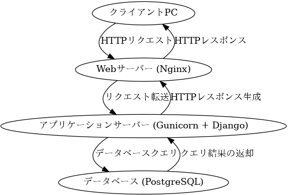
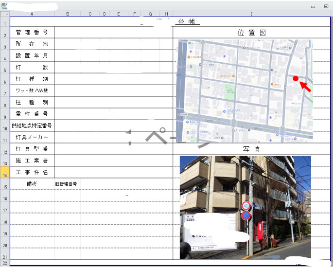
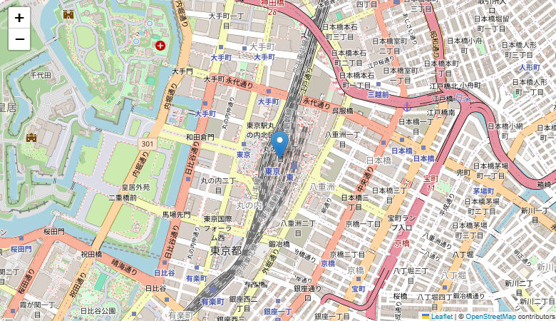
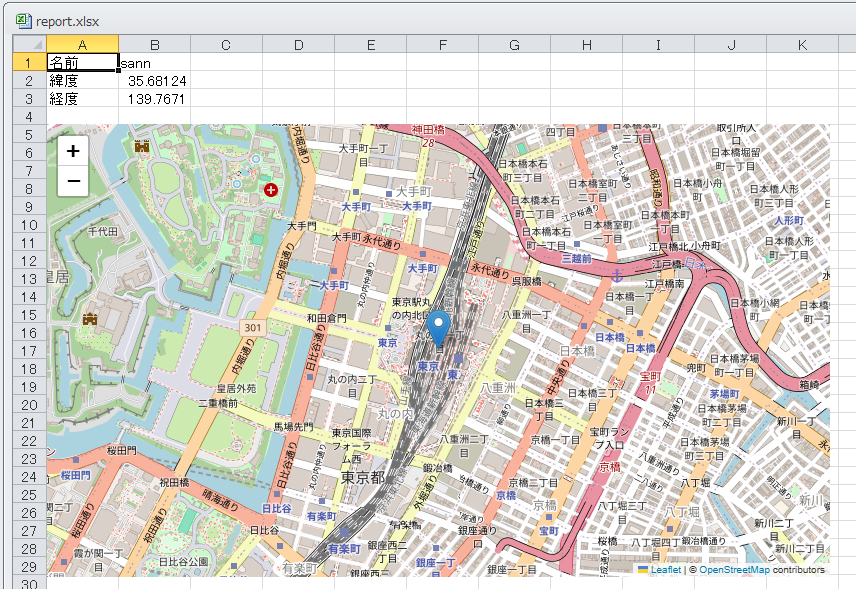

1. WebGISからExcel帳票を自動作成する話
- 氏名：さんのみや
- 業務
- 現地調査向けのWebGISの設計・開発
- https://test.sanei.jp/landing/
- 発表の目的
- 地図情報を含む帳票を自動で作成する方法の紹介
2. WebGISの構成
- フロントエンド：Javascript（Leaflet.js）
- バックエンド：Python（Django）
- DB：PostgresDB

3. 背景
- 社長から一言：「自治体ごとの帳票、WebGISから自動出力できない？」
- 自治体のフォーマットはExcel
- 属性情報はDBから取得できる
- 地図付き帳票がネック（地物を載せた地図画像をどうやって生成するか）

4. 解決策の概要
- 帳票はDjangoからPythonスクリプト実行して作成する。
- 属性値のExcel自動入力は:openpyxl
- 地図・地物のブラウザ描画＋スクリーンショット自動取得:folium+Selenium
- 画像ファイルのExcel追加:openpyxl
5. 「地物を載せた地図HTML生成」「画面キャプチャ」
import folium from selenium import webdriver import os import time def generate_map_image(lat, lon, name): # 1. 地図HTMLを作成 m = folium.Map(location=[lat, lon], zoom_start=15) folium.Marker([lat, lon], popup=name).add_to(m) m.save('temp_map.html') # 2. seleniumで画像キャプチャ options = webdriver.ChromeOptions() options.add_argument('--headless')# ブラウザを画面に表示せずにバックグラウンドで起動するための設定 driver = webdriver.Chrome(options=options) driver.set_window_size(800, 600) driver.get('file://' + os.path.abspath('temp_map.html')) time.sleep(2) # 地図読み込み待機 driver.save_screenshot('map.png') driver.quit() generate_map_image(35.681236, 139.767125, "管理番号:00001")

6. 画面キャプチャした画像をExcelに貼り付け
from openpyxl import Workbook from openpyxl.drawing.image import Image as ExcelImage import os def create_excel_with_image_and_attributes(image_path, attributes): wb = Workbook() ws = wb.active ws['A1'] = '名前' ws['B1'] = attributes['name'] ws['A2'] = '緯度' ws['B2'] = attributes['lat'] ws['A3'] = '経度' ws['B3'] = attributes['lon'] img = ExcelImage(image_path) ws.add_image(img, 'A5') wb.save('report.xlsx') attributes={'name' : 'sann', 'lat' : 35.681236, 'lon' : 139.767125 } image_path = os.path.join(os.getcwd(), "map.png") create_excel_with_image_and_attributes(image_path, attributes)

7. まとめ
- WebGIS→Excel帳票の作成の基本的な処理を抑えた。
- 地図画像のキャプチャが最大のハードルだったが、Seleniumで解決
- 同僚に実装してもらう予定